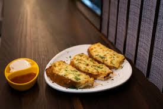

Garlic Bread

Garlic bread is a popular, savory, and aromatic side dish made by topping sliced bread—typically baguette, ciabatta, or sourdough—with a mixture of butter, minced garlic, herbs (parsley, oregano), and often olive oil.
Ingredients
- ¼ cup butter
- ¾ tablespoon garlic powder
- ½ tablespoon dried parsley
- ½ (1 pound) loaf Italian bread, cut into ½-inch slices
- ½ (8 ounce) package shredded mozzarella cheese
Steps
- Gather all Ingredients
- Preheat the oven to 350 degrees F (175 degrees C).
- Melt butter in a small saucepan over medium heat; stir in garlic powder and dried parsley.
- Place bread slices on a medium baking sheet. Using a basting brush, brush bread generously with melted butter mixture.
- Bake in the preheated oven until lightly toasted, about 10 minutes.
- Sprinkle bread with mozzarella cheese and any remaining butter mixture. Continue baking until cheese is melted and bread is lightly browned, about 5 minutes.
Home